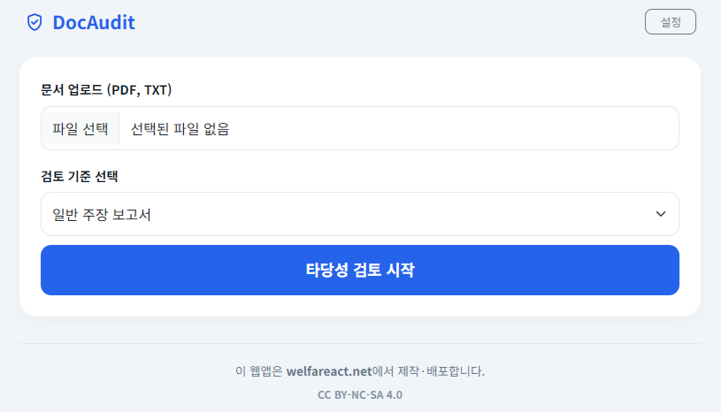

문서 타당성 검토 (DocAudit v2.0)
PDF나 텍스트 문서를 업로드하면 AI가 그 내용을 분석하여 사업의 타당성, 보완점, 개선 방향을 제안합니다. Gemini 2.5 Flash-lite 탑재로 더욱 민첩한 분석과 5가지 맞춤형 보고서/보도자료 검토 기준을 제공합니다.
📁
5가지 전문 분석 기준
일반 보고서, 사회복지계획서, 국가정책 브리핑 외에도 사업결과보고서 및 보도자료를 정밀 분석합니다.
📋
논리적 리스트 형태 출력
복잡한 표 대신 일목요연하고 직관적인 논리 리스트 형태로 피드백을 제공하여 한눈에 문제점과 대안을 파악할 수 있습니다.
⚙️
웹앱 내 통합 설정 및 사본 복제
웹앱 우측 상단에 통합된 [설정] 메뉴를 통해 Gemini API Key를 보안 저장하고, [사본 만들기] 버튼으로 드라이브에 안전하게 복제할 수 있습니다.

계획서 자동 분석 리포트 화면
💡 활용 프롬프트 및 소스 코드
전문적인 분석을 위해 사용된 모든 프롬프트 엔진 및 전체 소스 코드는 아래 링크의 구글 문서와 연결된 Apps Script 에디터에서 자유롭게 확인 및 복사하실 수 있습니다.
소스 코드 및 프롬프트 전문 보기 →